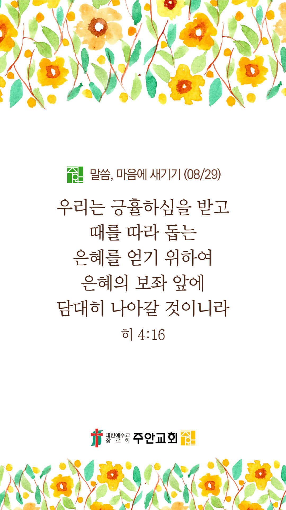

온라인 기도실 안내
2021년 08월29일(일)~09월 04일(토)
- 온라인 기도실은 온 회중이 함께 주님 앞으로 나아가는 자리입니다
- 30분 정도 여유를 가지고 하시기 바랍니다
- 말씀과 묵상, 찬양과 기도로 나아갑니다
- 배경 음악이 나올 수 있습니다 볼륨을 조절해주세요
준비가 되셨으면 아래의 버튼을 눌러주세요
할렐루야
내 영혼아 여호와를 찬양하라
시 146:1
- 가사를 묵상하며 읽습니다
내 아버지 그 품안에서
내 영혼은 안전합니다
주 손길로 내 삶을 안으시니
그 평강이 나를 덮습니다
나 비록 넘어지며 흔들리지만
주 내 안에 거하며 나를 붙드시니
할렐루야
내 영혼아 여호와를 찬양하라
시 146:1
- 가사를 묵상하며 읽습니다
내 생각을 주께로 돌리고
주시는 평강의 옷을 입습니다
주 약속 안에서 내 영혼 평안해
내 뜻보다 크신 주님의 계획 나 신뢰해
두려움 다 내려놓고 주님만 의지해
주 안에서 내 영혼 안전합니다
할렐루야
내 영혼아 여호와를 찬양하라
시 146:1
내 영혼은 안전합니다 by 어노인팅
위의 찬양이 끝나면 말씀읽기를 눌러주시면 됩니다
주의 말씀은 내 발에 등이요
내 길에 빛이니이다 (시119:105)
오늘의 말씀입니다
음악 소리가 크면 조절하시기 바랍니다

마음의 묵상
히 4:16
“그러므로 우리는 긍휼하심을 받고 때를 따라 돕는 은혜를 얻기 위하여 은혜의 보좌 앞에 담대히 나아갈 것이니라”
1. 주님의 긍휼하심을 받기를 원하시나요?
2. 때를 따라 돕는 은혜를 얻길 원하시나요?
3. 긍휼과 은혜를 얻기 위해 어떻게 하라고 말씀하나요?
늘 주님 앞으로 담대히 나아가게 하소서
회개, 삶의 방향을 바꾸는 결정
회개의 기도를 들으시는 하나님...
“그러므로 너의 이 악함을 회개하고
주께 기도하라
혹 마음에 품은 것을 사하여 주시리라”
- 사도행전 8:22 -
3분 정도 회개하며 주님 앞에 나아갑니다
사슴이 시냇물을 찾기에 갈급함 같이
시 42:1
- 다음의 말씀을 소리 내어 읽습니다
[시편 37편 1-4절]
1 악을 행하는 자들 때문에 불평하지 말며 불의를 행하는 자들을 시기하지 말지어다
2 그들은 풀과 같이 속히 베임을 당할 것이며 푸른 채소 같이 쇠잔할 것임이로다
3 여호와를 의뢰하고 선을 행하라 땅에 머무는 동안 그의 성실을 먹을 거리로 삼을지어다
4 또 여호와를 기뻐하라 그가 네 마음의 소원을 네게 이루어 주시리로다
하나님 나라
1. 하나님의 나라가 속히 이 땅에 임하게 하소서
하나님 아버지,
전 세계에 바이러스와 변이 바이러스의 확산이 그치게 하소서. 특별히 기근, 재난, 분쟁, 테러와 전쟁으로 인하여 고난 가운데 있는 나라와
민족과 난민들을 긍휼히 여겨주소서. 각 국의 지도자들과 분쟁의 당사자들에게 하나님을 두려워하는 마음을 부어주셔서, 모든 나라와 민족
가운데 다툼과 전쟁이 그치게 하시고, 하나님의 평강이 임하게 하소서.
간절한 마음으로 3분 정도 기도합시다
남과 북
2. 남북한이 속히 복음으로 통일되게 하소서
하나님 아버지,
바이러스로 인한 국경 봉쇄와 기근으로 인하여 북한의 주민들이 굶주리고 있습니다. 이들을 불쌍히 여겨주셔서 의식주로 염려하지 않고 살아갈 수
있도록 닫힌 문을 열어주시고, 길을 만들어주시옵소서. 특별히 북한의 다음 세대들이 감시와 통제에서 벗어나 자유롭게, 마음껏 꿈을 펼칠 수 있는
그런 날이 속히 오게 하소서.
간절한 마음으로 3분 정도 기도합시다
대한민국
3. 우리나라가 하나님을 경외하는 나라가 되게 하소서
하나님 아버지,
건강한 가정을 해체하고, 혼인과 가족제도를 파괴하며, 일부일처제와 양성평등을 근간으로 한 헌법에도 위배되는 ‘건강가정기본법’과 하나님께서
인간을 남자와 여자로 창조하셨다는 창조질서를 부정하고, 인권이라는 허울 아래 종교의 자유와 표현의 자유마저 규제하는 ‘평등에 관한 법률안’이
통과되지 못하게 막아주시고, 하나님을 경외하며 국민들을 진정 사랑하고 섬기는 참된 지도자들에 의해서 하나님이 기뻐하시는 방향으로 나라의
정책과 법이 세워지게 하소서.
간절한 마음으로 3분 정도 기도합시다
한국교회
4. 한국교회가 성령으로 새롭게 부흥되게 하소서
하나님 아버지,
한국교회 안에 다시 한번 성령의 불이 일어나게 하소서. 모든 교회들마다 사모하는 영혼들에게 성령님께서 충만히 임재하여 주셔서,
한국 교회가 기도하는 교회가 되게 하여 주시고, 다시 한번 놀라운 부흥의 역사가 일어나게 하소서. 모든 성도들이 하나님을 사랑하며,
교회를 사랑하며 이웃과 지역사회를 사랑하며 섬기는 선교적 삶을 살아가게 하소서.
간절한 마음으로 3분 정도 기도합시다
주안교회
5. 주안교회가 다음 세대를 세우는 선교적 교회가 되게 하소서
하나님 아버지,
받을 자격이 하나도 없는 우리들에게 은혜를 베푸사, 주님의 천국잔치에 참여하게 불러주시니 감사합니다. 돌이켜 보면, 우리의 삶에 당연한 것은
하나도 없었고, 모든 것이 하나님의 은혜였음을 고백합니다. 바라기는 주안의 모든 성도님들이 그 부르심의 은혜를 감사하는 삶을 살게 하시고,
아직도 이 천국잔치의 부르심에 응답하지 않고 있는 우리의 사랑하는 가족들을 강권하여 그들을 천국잔치에 인도하게 하소서.
간절한 마음으로 3분 정도 기도합시다
감사의 기도
- 오늘 기도를 인도하신 주님께 감사를 올려드립니다
- 아래의 구절을 읽고 주님께 감사의 마음을 올려드립시다
“네 길을 여호와께 맡기라
그를 의지하면 그가 이루시고”
- 시편 37장 5절 -
고요한 가운데 잠시 침묵하시기 바랍니다
파송, 세상을 향하여
- 오늘의 온라인 기도를 마쳤습니다
기도를 들으신 주님께서 평안히 가라 하십니다
주님께서 우리와 함께 하시니 두려울 것이 없습니다
새벽을 깨우며
- 새벽기도회 안내입니다